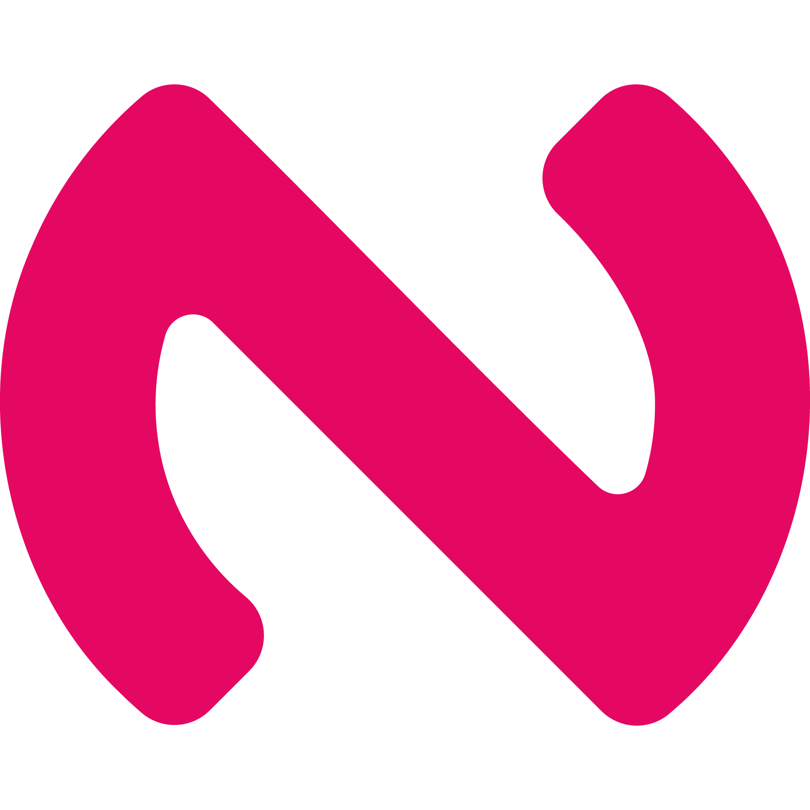

Rauf Kaya
Seçili projeler

Discord botuNraphy
Discord sunucularına Türkçe komutlarla düzen, eğlence ve topluluk araçları getiren çok amaçlı bir bot. Tek komutla kanal ve rol kurulumu yapabilir; üyeleri karşılayıp moderasyon araçlarıyla sunucuyu yönetebilirsin.
- Sunucu kurulumu, kayıt ve karşılama
- Spam ve bağlantı engelleme, uyarılar ve mesaj kayıtları
- Kelime oyunları, çekilişler ve davet takibi
Restoran & kafe yazılımıHesapVizyon.com
Restoran ve kafelerin ürün maliyetini, satış fiyatını ve finansal durumunu tek panelde görmesini sağlayan bir analiz aracı. Reçete maliyetlerini hesaplayıp kâr marjı ve platform kesintilerini karşılaştırmayı kolaylaştırır.
- Malzeme fiyatlarına göre güncellenen ürün reçeteleri
- KDV, komisyon ve hedef kâra göre fiyat senaryoları
- Şube bazında gelir-gider takibi ve satış raporları
Ağ güvenliğiPort Scanner
Bir hedefte erişilebilir portları tarayarak çalışan servisler hakkında hızlı bir ön değerlendirme sunan ağ güvenliği aracı.
- Hedef üzerinde port taraması
- Açık ve kapalı portları ayırt etme
Güvenlik aracıParola Güvenlik Analizörü
Güçlü parolalar üretmeye ve mevcut parolaların yapısal güvenliğini anlaşılır ölçütlerle değerlendirmeye yardımcı olan araç.
- Özelleştirilebilir parola üretimi
- Uzunluk ve karakter çeşitliliğine göre puanlama
Etkinlik takibiSiber Etkinlik Takipçisi
CTF yarışmalarını ve siber güvenlik konferanslarını tek yerde listeleyerek yaklaşan etkinlikleri takip etmeyi kolaylaştıran proje.
- CTF ve konferansları düzenli listeleme
- Etkinlik tarihleri için merkezi görünüm